![]()
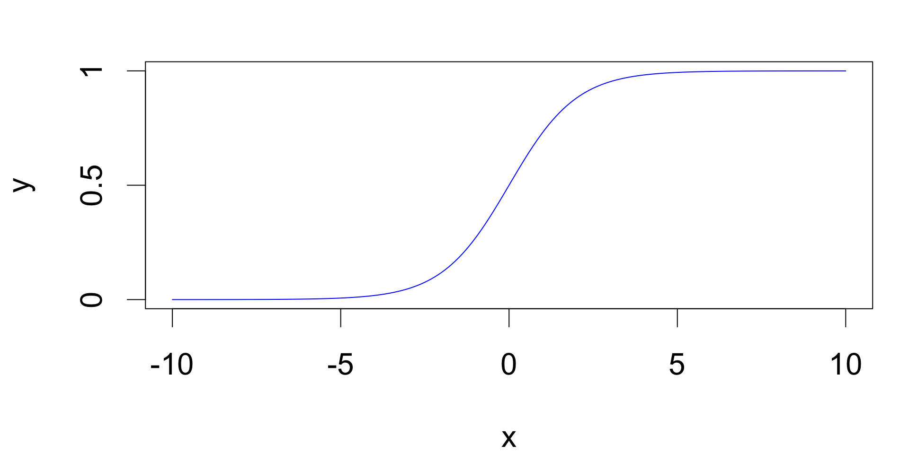
Mathematical Modeling of Psychological Theories
TipAnswer: -136.7
Step 1: Define variables
Define variables
How deep is your love?
Define a variable for each construct* of the VAST display. These can be measured variables or unmeasured (mediating) variables.
You can either refer to an actual measurement procedure or simply define a variable. In both cases you should explicitly define the following properties:
- variable name (i.e., to which concept in your VAST display does it refer?),
- scale level (categorical, ordinal, interval scale),
- range of possible values (e.g., 0 … 1),
- semantic anchors (e.g., 0 = “complete absence”, 1 = “maximal possible value”)
Define variables
Some guiding questions and heuristics
- Type of variable: continuous, dichotomous, ordinal, categorical?
- Is the variable naturally bounded? On both sides or only one?
- How can the numbers be interpreted?
- Natural/objective scale (e.g. physical distance)
- As standardized z-scores?
- Normalized to a value between 0 and 1? Or rather -1 to 1?
- Can we find an empirical or semantic calibration?
- Just noticable difference
- 100 = “largest realistically imaginable quantity of that variable”
Psychological (“internal”) variables could range from \(-\infty\) to \(+\infty\), and then are transformed to bounded manifest responses when they leave the \(\Psi\)-box (cf. item response theory)
Group work (15 min.): Specify variables
In the Google doc (below your Construct Table) fill in 2-3 exemplary variables from your bystander model in the Variables Table:
Example:
| Construct in VAST display | Shortname | Type | Range/values | Anchors |
|---|---|---|---|---|
| Affective tone of instruction | aff_tone | Continuous | [-1; 1] | -1 = maximally negative 0 = neutral +1 = maximally positive |
| Anxiety | anxiety | Continuous | [0; 1] | 0 = no anxiety 1 = maximal anxiety |
| Kohlberg’s Stages of Moral Development | moral_stage | Ordinal | {1; 2; 3} | 1=Pre-conventional 2=Conventional 3=Post-Conventional |
| … | … | … | … |
Note: This resembles a codebook; but for theoretical variables, not only for measured variables. As a heuristic, list all concepts that are not higher-order concepts (because these usually have no single numerical representation).
Step 2: Define functional relationships between variables
Group work (10 min.)
Sketch a first functional relationship on paper
We want to model the following phenomenon (a specific version of the bystander effect):
- Without other people present, the tendency (probability or frequency) that a person helps a victim is high.
- The tendency of helping a victim decreases monotonically with the number of other people (bystanders) present.
- The tendency of helping a victim never drops to 0.
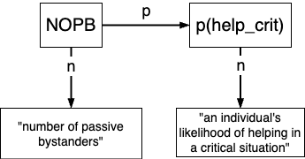
Task: Sketch a first functional relationship that could model this phenomenon. Use the variables you defined in the previous step (including their labels and ranges).
Step 2: Define functional relationships between variables
Every causal path needs to be implemented as a mathematical function, where the dependent variable/output \(y\) is a function of the input variable(s) \(x_i\).
\(y = f(x_1, x_2, ..., x_i)\)
This can, for example, be a linear function, \(y = \beta_0 + \beta_1x_1\).
Step 2: Define functional relationships between variables
Fixed and free parameters
\(\color{red} y = \color{forestgreen} \beta_0 \color{black} + \color{forestgreen} \beta_1 \color{blue} x\)
→ \(\color{red} y\) = output variable, \(\color{forestgreen} \beta\)s = parameters, \(\color{blue} x\) = input variable.
Two types of parameters:
- Fixed parameters: Parameters that are chosen a priori and do not change in the light of empirical data. Their values are based on previous research, theory, or external information (such as properties of the world).
- Free parameters: Can be adjusted to optimize the fit of the model to data. They are estimated from empirical data.
Note
Virtually all parameters (except natural constants) could be imagined as being free. It is a choice to fix some of them in order to simplify the model. In our course, we do not attempt to estimate parameters from data. Instead, we will explore the behavior of our models under different parameter settings (i.e., a sensitivity analysis).
Step 2: Define functional relationships between variables
Fixed and free parameters
Fixing a parameter: \(\color{forestgreen} \beta_0 \color{black} = 1 \rightarrow \color{red} y = \color{forestgreen} 1 \color{black} + \color{forestgreen} \beta_1 \color{blue} x\)
That means, the slope \(\color{forestgreen} \beta_1\) still can vary, but the intercept is fixed to 1.
Free parameters give flexibility to your function: If you are unsure about the exact relationship between two variables, you can estimate the best-fitting parameters from the data.
For example, sometimes a theory specifies the general functional form of a relationship (e.g., “With increasing \(x\), \(y\) is monotonously decreasing”), but does not tell how fast this decrease happens, where \(y\) starts when \(x\) is minimal, etc. These latter decisions are then made by the free parameters.
Discussion
Sketch a first functional relationship on paper
- Which aspects of your sketched function could be free parameters? Describe them in plain language.
- Draw a couple of alternative plots that (a) follow the same functional form and (b) also fullfill the criteria of the phenomenon.
- What is the semantic meaning of the free parameters?
A 3-parameter exponential decay function
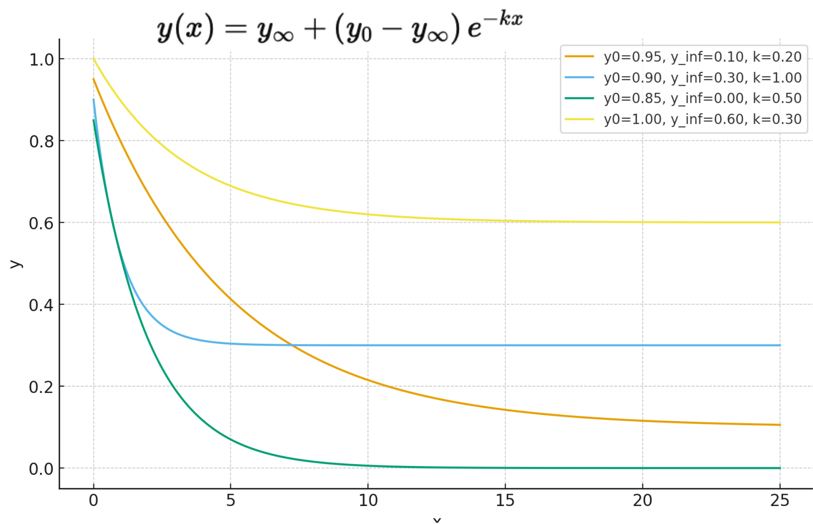
A 3-parameter exponential decay function
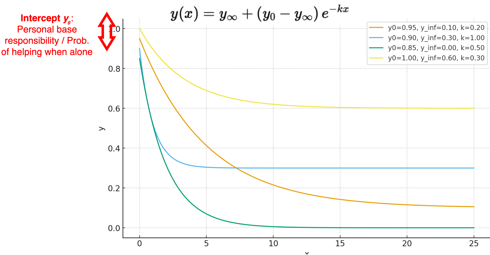
A 3-parameter exponential decay function
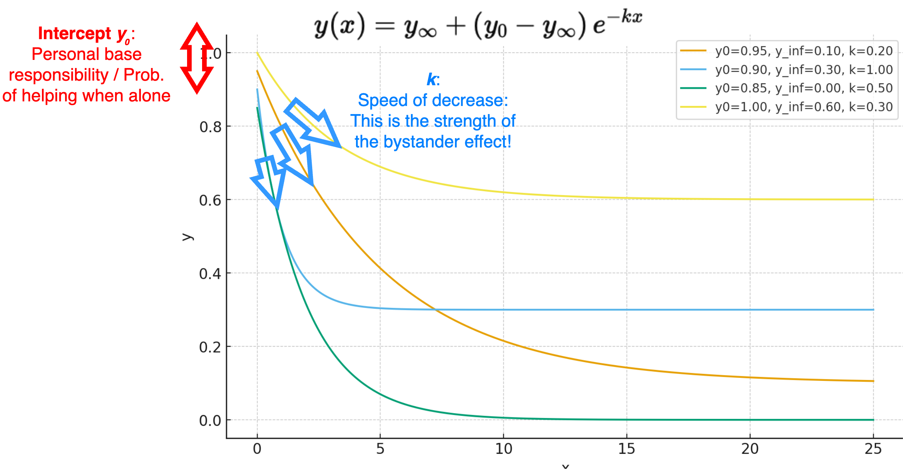
A 3-parameter exponential decay function
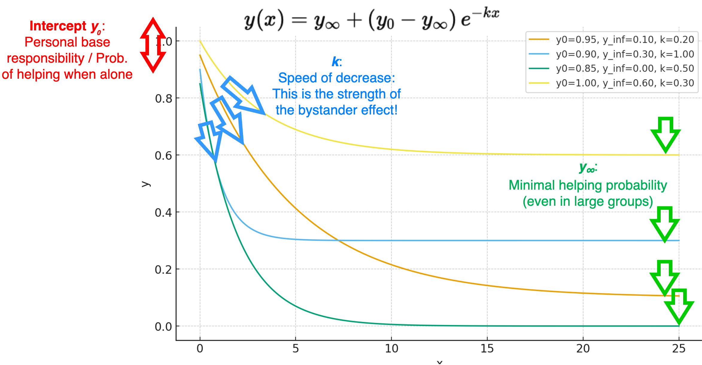
Tool: The logistic function family
As a linear function is unbounded, it can easily happen that the computed \(y\) exceeds the possible range of values.
If \(y\) has defined boundaries (e.g., \([0; 1]\)), a logistic function can bound the values between a lower and an upper limit (in the basic logistic function, between 0 and 1):
\(y = \frac{1}{1 + e^{-x}}\)
Tool: The logistic function family
With the 4PL* model from IRT, you can adjust the functional form to your needs, by:
- shifting the inflection point from left to right (aka. “item difficulty”, parameter \(d\))
- change the steepness of the S-shape (aka. “discrimination parameter”, parameter \(a\))
- Move the lower asymptote up or down (parameter \(min\))
- Move the upper limit up or down (parameter \(max\))
\(y = \text{min} + \frac{\text{max}-\text{min}}{1 + e^{a(d-x)}}\)
logistic <- function(x, d = 0, a = 1, min = 0, max = 1) {
min + (max - min)/(1 + exp(a * (d - x)))
}Tool: The logistic function family
\(y = \text{min} + \frac{\text{max}-\text{min}}{1 + e^{a(d-x)}}\) (basic logistic function as dotted grey line)
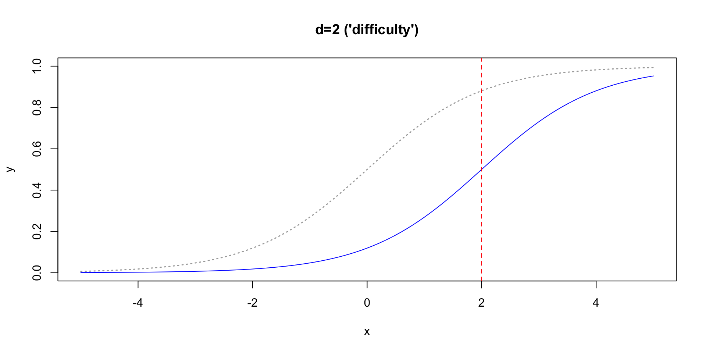
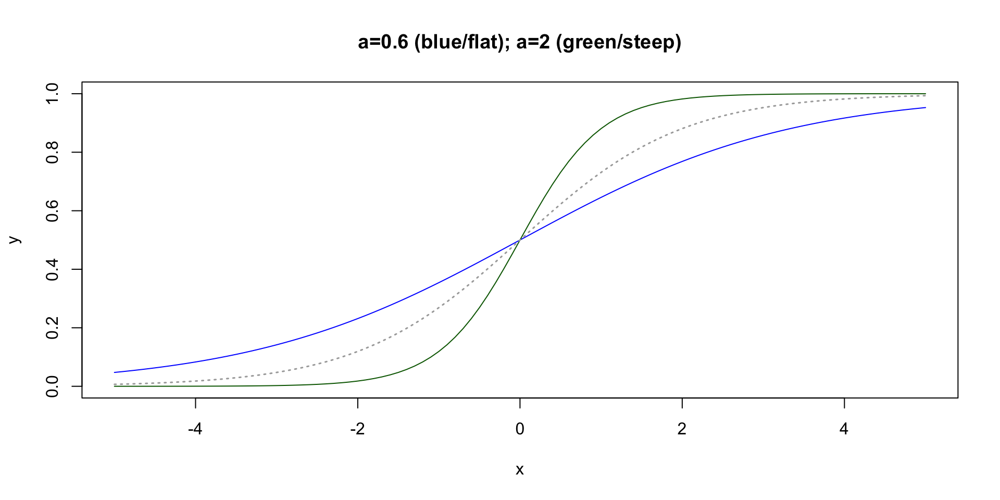
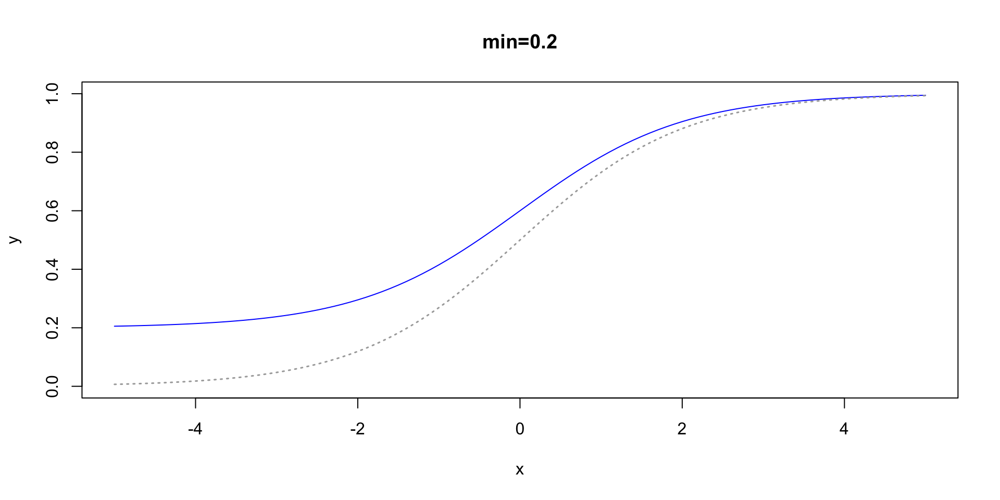
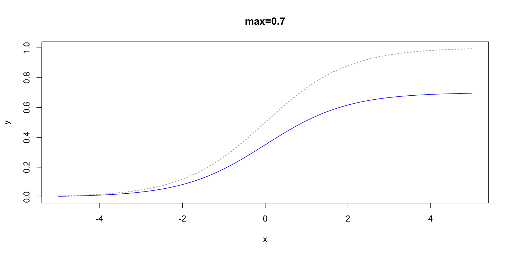
Tool: The logistic function family
The d, a, min, and max parameters can be used to “squeeze” the S-shaped curve into the range of your variables. For example, if your \(x\) variable is defined on the range \([0; 1]\), the following function parameters lead to a reasonable shift:
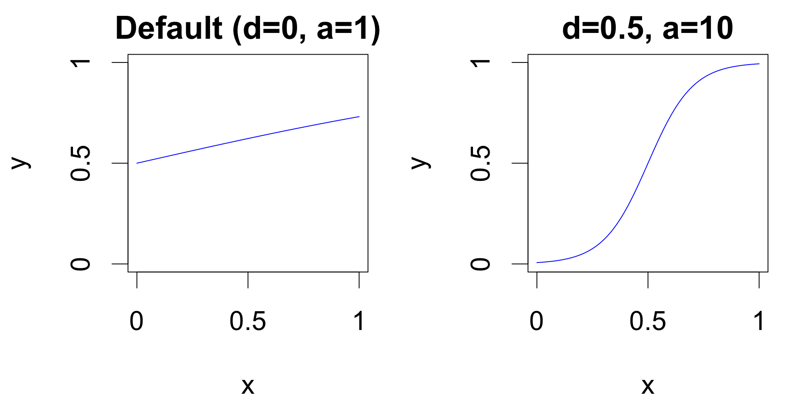
Use the full mathematical toolbox
Of course, the logistic function is just a start - you can use the full toolbox of mathematical functions to implement your model!
Note
These considerations about functional forms, however, are typically not substantiated by psychological theory or background knowledge - at least at the start of a modeling project. We choose them, because we are (a) acquainted to it, and/or (b) they are mathematically convenient and tractable.
Empirical evidence can inform both your choice of the functional form, and, in a model-fitting step, the values of the parameters.
Step 3: Implement the functions in R
Excursus: Functions in R
- What is a function?
- A reusable block of code designed to perform a specific task.
- Can be an implementation of an actual mathematical function \(y = f(x, z)\)
- But can also be a more complex operation, like reading a file, transforming data, or plotting a graph.
- Why use functions?
- Modularity: Break down complex problems into manageable parts.
- Reusability: Write once, use multiple times.
- Maintainability: Easier to debug and update code.
Anatomy of an R Function
# Basic structure of a function
my_function <- function(arg1, arg2) {
# Function body
result <- arg1 + arg2
return(result)
}- Function name:
my_function - Parameters:
arg1,arg2 - Body: Code that defines what the function does
- Return value: return a specific value that has been computed in the function body with
return(return_variable). If no explicitreturn()statement is given, the last evaluated expression is returned by default.
# use meaningful names
sum <- function(x, y) {
S <- x+y
return(S)
}# short version: the last computation
# is returned by default
sum <- function(x, y) {x+y}Creating and Using Your Own Function
- Define the Function:
get_y <- function(x) {
y <- x^2
return(y)
}- Call the Function:
y <- get_y(x=2)
print(y) # Output: 4Tips:
- Use meaningful and short names for functions and parameters.
- Keep functions focused on a single task.
- Document your functions with comments (ideally with the
roxygen2documentation standard) - Atomic functions: Each
Rfunction implements exactly one functional relationship of your model.
Vectorization
For our simulations, we need to ensure that our functions can handle vector inputs*. (Typically, all functions in R work are vectorized). This simply means, that arithmetic and logical operations are applied element-wise to all elements of a vector:
# define a vector
x <- 1:5
x[1] 1 2 3 4 5x * 2[1] 2 4 6 8 10x + 10[1] 11 12 13 14 15x^2[1] 1 4 9 16 25x > 3[1] FALSE FALSE FALSE TRUE TRUEExample with roxygen2 documentation
#' Compute the updated expected anxiety
#'
#' The expected anxiety at any given moment is a weighted average of
#' the momentary anxiety and the previous expected anxiety.
#'
#' @param momentary_anxiety The momentary anxiety, on a scale from 0 to 1
#' @param previous_expected_anxiety The previous expected anxiety, on a scale from 0 to 1
#' @param alpha A factor that shifts the weight between the momentary anxiety (alpha=1)
#' and the previous expected anxiety (alpha=0).
#' @return The updated expected anxiety, as a scalar on a scale from 0 to 1
get_expected_anxiety <- function(momentary_anxiety, previous_expected_anxiety, alpha=0.5) {
momentary_anxiety*alpha + previous_expected_anxiety*(1-alpha)
}roxygen2 comments start with #' and are placed directly above the function definition.
- The first line is the title
- The following lines (after a blank line) are the description
- Each parameter of the function is documented with
@param parameter_name Description. Provide the range of possible values if applicable. - The return value is documented with
@return Description
Exercise: Document our exponential decay function
Check out roxygen2 and document our exponential decay function with:
- title
- description
- parameters
- return value.
get_p_help <- function(NOPB, y_0, y_final, BSE_strength) {
p_help <- y_final + (y_0 - y_final) * exp(-BSE_strength * NOPB)
return(p_help)
}roxygen2 documentation: Solution
TipSolution
#' Compute the probability to help in an emergency situation
#'
#' Calculate the probability of a bystander to help in a critical situation
#' as a function of the number of passive bystanders.
#'
#' @param NOPB Number of passive bystanders. Ranges from 0 to infinity (discrete).
#' @param y_0 Probability to help when no other bystanders are present (function intercept).
#' Ranges from 0 to 1 (continuous).
#' @param y_final Probability to help when number of other bystanders goes to infinity.
#' Ranges from 0 to 1 (continuous).
#' @param BSE_strength Strength of the bystander effect (function slope).
#' Ranges from -inf to +inf (continuous); the classical
#' bystander effect (i.e., decreasing probability with more bystanders)
#' occurs for positive values.
#'
#' @return Probability to help for the given parameters. Ranges from 0 to 1 (continuous).
get_p_help <- function(NOPB, y_0, y_final, BSE_strength) {
p_help <- y_final + (y_0 - y_final) * exp(-BSE_strength * NOPB)
return(p_help)
}Mapping continuous variables to dichotomous outcomes
Many psychological theories ultimately predict dichotomous outcomes (e.g., help vs. no help). In this case, often continuous latent variables are transformed into dichotomous manifest outcomes:
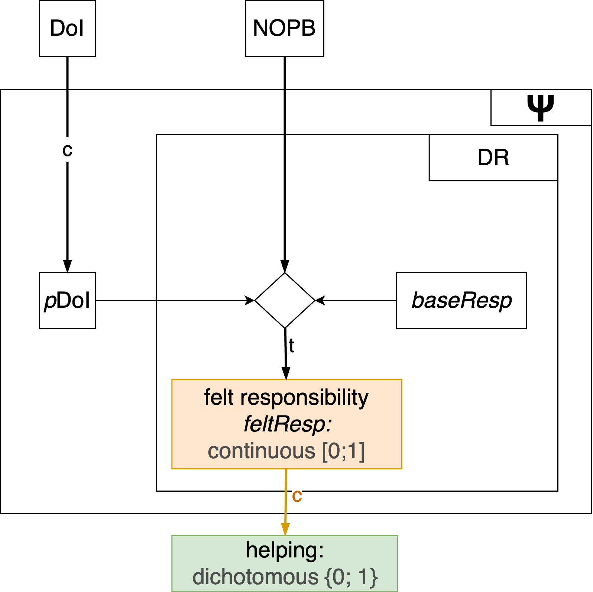
Mapping continuous variables to dichotomous outcomes
Option 1: Hard (deterministic) thresholds
Behavior occurs if feltResp exceeds some threshold \(\theta\):
\[ \begin{equation} \text{helping} = \begin{cases} 1 & \text{if } \text{feltResp} \ge \theta\\ 0 & \text{if } \text{feltResp} \lt \theta \end{cases} \end{equation} \]
Any value > threshold \(\theta\) is mapped to outcome 1, all other values to outcome 0. Any input value will deterministically lead to the respective output value.
Mapping continuous variables to dichotomous outcomes
Option 1: Hard (deterministic) thresholds
#' @param feltResp A continuous latent variable
#' @param theta The threshold value
#' @return A dichotomous outcome (0/1)
get_helping <- function(feltResp, theta) {
if (feltResp >= theta) {
helping <- 1
} else {
helping <- 0
}
return(helping)
}More compact:
get_helping <- function(feltResp, theta) {
ifelse(feltResp >= theta, 1, 0)
}Mapping continuous variables to dichotomous outcomes
Option 2a: As a probabilistic outcome
Latent input variables in the [0; 1] range can be treated as a probability that is fed into a Bernoulli trial*:
# Simulate a dichotomous outcome based on a probability
#' @param feltResp A probability value between 0 and 1
get_helping <- function(feltResp) {
helping <- rbinom(n=1, size=1, prob=feltResp)
return(helping)
}Here, each run of the function will produce a different output, even for the same input value. Make your simulation reproducible by setting a seed with set.seed().
Mapping continuous variables to dichotomous outcomes
Option 2b: As a probabilistic outcome (Two steps)
- Transform latent input variables that can range from \(-\infty\) to \(+\infty\) to the [0; 1] range (e.g., with a logistic function)
- Treat the output as a probability:
#' @param trait A latent trait on a *z* scale (ranging from -Inf to +Inf)
get_helping <- function(trait) {
# first convert trait to probability with a logistic transformation
# Use the 4PL logistic function to shift the midpoint etc.
prob <- 1 / (1 + exp(-trait))
# Transform probability to a random dichotomous outcome
helping <- rbinom(n=1, size=1, prob=prob)
return(helping)
}Step 3: Apply everything to your reduced model
- Define all variables of your model in the Variables Table (short name, range, scale level, semantic anchors).
- Categorize: Which variables are exogenous, which are endogenous?
- Exogenous variables are not influenced by other variables in the model.
- Endogenous variables are influenced by other variables in the model
- Every endogenous variable is a function of all of their input parameters.
- Create sensible functional relationships for every endogenous variable.
- Create a 3rd table (below the Construct Table and the Variables Table), with all functional relationships.
- Add a short comment to what extent this functional relationship has been derived from theory (see response scale in Google doc)
- Add a short comment to what extent this functional relationship has been backed by empirical evidence.
- Implement the functions in
Rwith properroxygen2documentation in your group’s subfolder.
Suggested response scale for “To what extent derived from theory?”:
- Dictated by theory (add IDs from the Construct Table as reference)
- Derived from theory
- Loosely inspired by theory
- Not based on focal theory, but rather on common sense or other theories
- Not at all
Step 4: Plot relationships
Step 4: Plot relationships
4a: Create a data frame with combinations of input variables and parameters
Plot main input variable on the x-axis, output variable on the y-axis.
Moderating input variables and parameters can be represented by faceting (small multiples), color coding, or shapes.
- continuous (typically on the x-axis): use
seq(from, to, by), can be fine-grained - categorical (colors, shapes, facets): use
c(level1, level2, level3), typically only a few levels- naturally categorical
- continuous ➙ “pick-a-point” with few relevant levels
Step 4: Plot relationships
4a: Create a data frame with combinations of input variables and parameters
Use the expand.grid() function to create all possible combination of a set of variables (the first varies fastest, the last varies slowest):
# Add all factors as arguments:
df <- expand.grid(
F1 = c("A", "B"),
F2 = c(1, 2, 3),
F3 = c(TRUE, FALSE)
)
print(df) F1 F2 F3
1 A 1 TRUE
2 B 1 TRUE
3 A 2 TRUE
4 B 2 TRUE
5 A 3 TRUE
6 B 3 TRUE
7 A 1 FALSE
8 B 1 FALSE
9 A 2 FALSE
10 B 2 FALSE
11 A 3 FALSE
12 B 3 FALSEStep 4: Plot relationships
4a: Create a data frame with combinations of input variables and parameters
Do this for all relevant input variables and parameters of your function.
#' Compute the probability to help in an emergency situation
get_p_help <- function(NOPB, y_0, y_final, BSE_strength) {
p_help <- y_final + (y_0 - y_final) * exp(-BSE_strength * NOPB)
return(p_help)
}df <- expand.grid(
NOPB = seq(0, 10, by=1),
y_0 = c(0.7, 0.8, 0.9),
y_final = c(0, 0.1, 0.2),
BSE_strength = c(0.3, 0.5)
)
print(head(df, 13)) NOPB y_0 y_final BSE_strength
1 0 0.7 0 0.3
2 1 0.7 0 0.3
3 2 0.7 0 0.3
4 3 0.7 0 0.3
5 4 0.7 0 0.3
6 5 0.7 0 0.3
7 6 0.7 0 0.3
8 7 0.7 0 0.3
9 8 0.7 0 0.3
10 9 0.7 0 0.3
11 10 0.7 0 0.3
12 0 0.8 0 0.3
13 1 0.8 0 0.3Step 4: Plot relationships
4b: Compute output variable
df <- expand.grid(
NOPB = seq(0, 10, by=1),
y_0 = c(0.7, 0.8, 0.9),
y_final = c(0, 0.1, 0.2),
BSE_strength = c(0.3, 0.5)
)
# compute the output variable
# (vectorized function application)
df$p_help <- get_p_help(
NOPB = df$NOPB,
y_0 = df$y_0,
y_final = df$y_final,
BSE_strength = df$BSE_strength
)
print(head(df, 20)) NOPB y_0 y_final BSE_strength p_help
1 0 0.7 0 0.3 0.70000000
2 1 0.7 0 0.3 0.51857275
3 2 0.7 0 0.3 0.38416815
4 3 0.7 0 0.3 0.28459876
5 4 0.7 0 0.3 0.21083595
6 5 0.7 0 0.3 0.15619111
7 6 0.7 0 0.3 0.11570922
8 7 0.7 0 0.3 0.08571950
9 8 0.7 0 0.3 0.06350257
10 9 0.7 0 0.3 0.04704386
11 10 0.7 0 0.3 0.03485095
12 0 0.8 0 0.3 0.80000000
13 1 0.8 0 0.3 0.59265458
14 2 0.8 0 0.3 0.43904931
15 3 0.8 0 0.3 0.32525573
16 4 0.8 0 0.3 0.24095537
17 5 0.8 0 0.3 0.17850413
18 6 0.8 0 0.3 0.13223911
19 7 0.8 0 0.3 0.09796514
20 8 0.8 0 0.3 0.07257436Step 4: Plot relationships
4c: Plotting with ggplot2
library(ggplot2)
ggplot() +
geom_line(data=df, aes(x=NOPB, y=p_help, linetype=factor(BSE_strength), color=factor(y_0))) +
facet_grid(~ y_final) +
labs(
x = "Number of passive bystanders (NOPB)",
y = "Probability to help",
color = "y_0 (help when no bystanders)",
linetype = "BSE strength"
) + theme_minimal()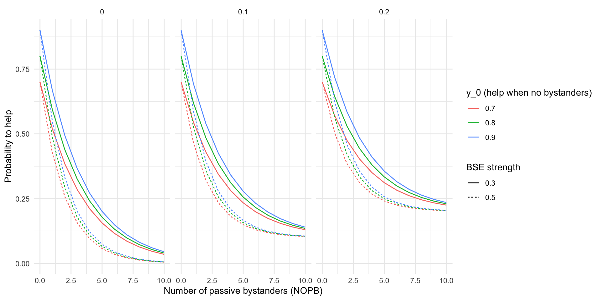
Step 4: Plot relationships
4a: Plotting with ggplot2: Live demo
Done as live demo, with ggplot2: Plot the atomic functions in the reasonable range of parameters to explore and understand their behavior.
Guiding questions:
- What is a good design for the plot?
- Is the resulting functional form plausible across all parameter combinations?
- Could it be simplified, e.g. by fixing some parameters? (There’s often a tendency to make the functions overly complex).
- Occams razor: Prefer simpler functions over more complex ones, if they explain the phenomenon equally well.
Putting everything together: The \(\Psi\) function
Step 5: Put everything together
Connect all functions to one “super-function” (which we will call the \(\Psi\) function), which takes all exogenous variables as input and computes the focal output variable(s):
# Pseudo-code:
get_x <- function(a, b) {a*2 + b}
get_y <- function(x) {x^2}
get_o <- function(y) {sqrt(y) + 3}
psi <- function(a, b) {
x <- get_x(a, b)
y <- get_y(x)
o <- get_o(y)
# return all relevant outputs as a list
# (e.g, the final output o, but also intermediate output y)
return(list(
y = y,
o = o
))
}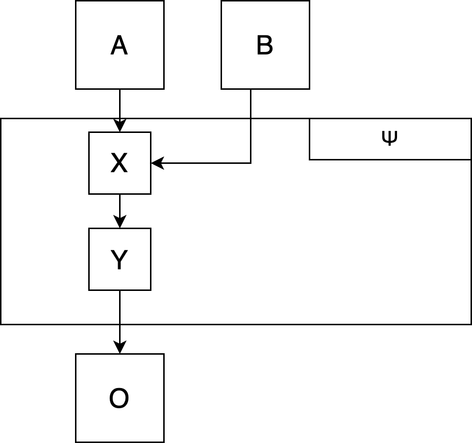
Plot the \(\Psi\)-function: Does it produce the phenomenon you intended to model?
(Excursus): Fitting the functions to empirical data
(Excursus): Fitting the functions to empirical data
We can tune our free parameters to fit the model as good as possible to empirical data. This is called model fitting.
See the Find-a-fit app for an example of a simple linear regression with two parameters (intercept and slope) that are fitted by an optimization algorithm:
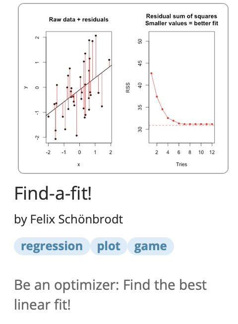
(Excursus): Fitting the functions to empirical data
(Live demo how our exponential fit function could be fitted to empirical data)
Step 6: Simulate a full data set
Step 6: Simulate a full data set
6a: Create a design matrix for experimental factors
To create a virtual experiment, we again use the expand.grid function to construct a design matrix of our experimental factors:
df <- expand.grid(
valence = c("pos", "neg"),
speed = c("slow", "fast")
)
print(df) valence speed
1 pos slow
2 neg slow
3 pos fast
4 neg fastStep 6: Simulate a full data set
6a: Add participants as “factor”
Now add one additional variable with a participant ID (this also determines the size of your sample):
n_per_condition <- 3
df <- expand.grid(
pID = 1:n_per_condition,
valence = c("pos", "neg"),
speed = c("slow", "fast")
)
print(df) pID valence speed
1 1 pos slow
2 2 pos slow
3 3 pos slow
4 1 neg slow
5 2 neg slow
6 3 neg slow
7 1 pos fast
8 2 pos fast
9 3 pos fast
10 1 neg fast
11 2 neg fast
12 3 neg fastWe have 12 participants overall: 3 participants in the pos/slow condition, 3 in the neg/slow condition, and so forth. Note that, although the participant ID repeats within each condition, these could be different (independent) participants if we assume a between-person design.
Group work (15 min.):
Create a design matrix
In your own R project, create a new file simulation.R.
In case you had multiple versions of the functions within your group: For today, each group uses only one consensus version. One person should do the coding, the others observe and comment in a “pair-programming” style.
Create a design matrix with expand.grid() and the following fully crossed experimental factors (\(n=30\) participants per condition):
- Danger of intervention (
DoI) with the levels 0.2 and 0.8 - Number of passive bystanders (
NOPB) with the levels 0, 1, and 4
TipHint
The resulting data frame should have 180 rows (2 x 3 x 30).
Step 6: Simulate a full data set
6b: Simulate random observed variables
Add observed interindividual differences or situational variables. These are not experimentally fixed at specific levels, but vary randomly between participants. You can draw them from a random distribution, e.g. a normal distribution with rnorm():
n <- nrow(df)
df$age <- rnorm(n, mean=26, sd=4) |> round()
# Extraversion
# z-scores: standard normal distribution
df$extra <- rnorm(n) |> round(1)
print(df) pID valence speed age extra
1 1 pos slow 33 1.5
2 2 pos slow 26 -1.6
3 3 pos slow 27 0.2
4 1 neg slow 22 -0.7
5 2 neg slow 16 -0.2
6 3 neg slow 23 -1.9
7 1 pos fast 25 -1.9
8 2 pos fast 29 1.7
9 3 pos fast 29 1.4
10 1 neg fast 28 -1.0
11 2 neg fast 25 0.9
12 3 neg fast 27 -0.9Draw random values between 0 and 1
Assume you virtual participants differ in their base responsibility, which you previously defined as a probability on the range \([0; 1]\).
How can you generate random values that roughly look like a normal distribution, but are bounded to the defined range?
Tool: The beta distribution
A handy distribution for drawing random values in the \([0; 1]\) range is the beta distribution. With its two parameters \(\alpha\) (also called \(a\) or shape1) and \(\beta\) (also called \(b\) or shape2), it can take many different forms:
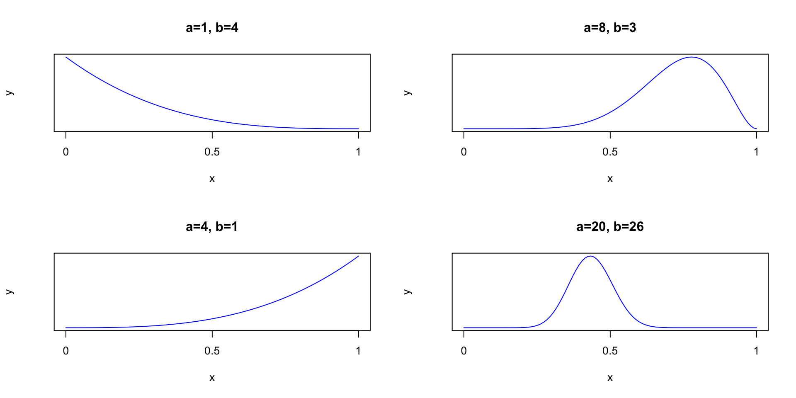
Tool: The beta distribution
How to choose \(\alpha\) and \(\beta\)? Asking ChatGPT for assistance:
NoteChatGPT prompt
Calibrate a beta distribution so that the peak is around 0.8 and the sd is around 0.1. Show a plot of the resulting distribution.
TipAnswer
Here’s the calibrated beta distribution: α ≈ 12.99, β ≈ 4.00. It has a mode ≈ 0.80 and standard deviation ≈ 0.10, as targeted.
Tool: The beta distribution
You can generate random values in R with the rbeta function. Here’s a comparison of a normal distribution and a matched beta distribution that respects the boundaries \([0; 1]\):
x.norm <- rnorm(10000, mean=0.8, sd=0.1)
hist(x.norm, xlab = "", ylab="", main="Normal distribution (M=0.8, SD=0.1)", xlim=c(-0.3, 1.1))
x.beta <- rbeta(10000, shape1=13, shape2=4)
hist(x.beta, xlab = "", ylab="", main="beta distribution (a=13, b=4)", xlim=c(-0.3, 1.1))Tool: The beta distribution
beta distribution respects the [0;1] boundaries
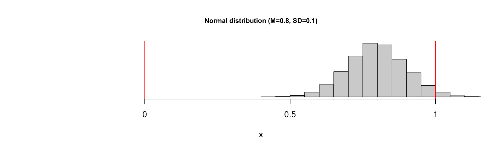
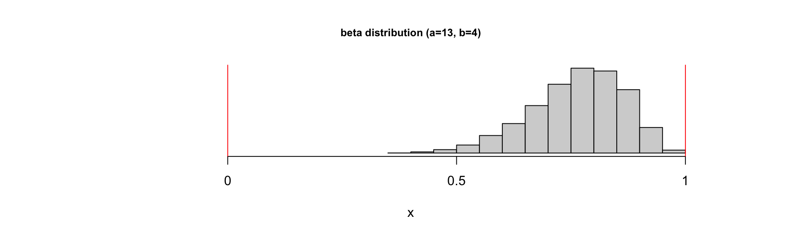
Tool: The Distribution Zoo
For simulations, it is good to know some basic distributions. Here are three interactive resources for choosing your distribution:
- The Distribution Zoo by Ben Lambert and Fergus Cooper
- The Probability Distribution Explorer by Justin Bois
- Interactive collection of distributions by Richard Morey
A note on interindividually varying function parameters
When we visually plotted and explored our atomic functions before, we tried out different parameter settings. When we simulate a concrete virtual sample, we need to fix them to one specific value or assign random values to them for each participant (e.g., if the treatment effect is different for each person).
If you do the latter, add the parameters as additional random observed variables to your data frame.
Group work (15 min.):
Add observed variables
Add random variables for all exogenous* variables of your model that are not experimentally manipulated. For variables ranging from 0 to 1, use the beta distribution with appropriate parameters.
- This includes, e.g., the personal base resposibility,
baseResp(if that is in your model). - Furthermore, add neuroticism (
neuro), age (age), and gender (gender). (Note: We don’t need them for our model, just for practice.) - Think about justifiable settings for the simulated variables (e.g., type of distribution, range, mean, SD).
TipHint
The resulting data frame should still have 180 rows and additional columns for obnserved variables, including neuro, age, gender and all observed variables in your model.
Step 6: Simulate a full data set
6c: Compute the outcome variable (i.e., the model output)
Once all input variables have been simulated, submit them to your model function and compute the outcome variable \(y\).
# psi() is the model function that takes
# all input parameters and returns the
# simulated output
df$y <- psi(df$valence, df$speed,
df$age, df$extra) pID valence speed age extra y
1 1 pos slow 33 1.5 10.7
2 2 pos slow 26 -1.6 14.2
3 3 pos slow 27 0.2 8.6
4 1 neg slow 22 -0.7 9.8
5 2 neg slow 16 -0.2 10.5
6 3 neg slow 23 -1.9 7.7
7 1 pos fast 25 -1.9 9.3
8 2 pos fast 29 1.7 10.4
9 3 pos fast 29 1.4 7.9
10 1 neg fast 28 -1.0 11.1
11 2 neg fast 25 0.9 9.5
12 3 neg fast 27 -0.9 4.8This only works if the psi() function can handle vectors as input (i.e., you can submit the entire data frame of input variables to the function).
Step 6: Simulate a full data set
Sources of interindividual differences
Not every person is identical, so in reality there probably are interindividual differences at several places:
- Sensors (i.e., manipulations and perceptions do not work the same for everyone)
- Actors (i.e., people differ how internal impulses are translated into overt behavior)
- Interindividual difference variables in the model
- Different parameter values in the functional relationships. For example, the individual treatment effect (ITE) could vary between participants.
We can simulate these interindividual differences - or we assume that some of them are constant for all participants.
Step 6: Simulate a full data set
6c: Unexplained variance / random noise
Furthermore, our models are always simplifications of reality. We can never model all relevant variables; and measurement error adds further noise. Consequently there is some unexplained variability (aka. random noise) in the system.
All additional sources of variation could be modeled as a single random error term pointing to the final outcome variable. This summarizes all additional sources of variation that are not explicitly modeled:
Step 6: Simulate a full data set
6c: Compute the outcome variable (i.e., the model output)
Add additional (summative) error variance to output variable:
# deterministic model output
df$y <- psi(df$valence, df$speed,
df$age, df$extra)
# Add additional noise to observed variable.
# The SD of the normal distribution
# determines the amount of error
df$y_obs <- df$y + rnorm(n, mean=0, sd=2) |>
round(1) pID valence speed age extra y y_obs
1 1 pos slow 33 1.5 10.7 10.0
2 2 pos slow 26 -1.6 14.2 12.5
3 3 pos slow 27 0.2 8.6 6.3
4 1 neg slow 22 -0.7 9.8 12.6
5 2 neg slow 16 -0.2 10.5 10.9
6 3 neg slow 23 -1.9 7.7 6.8
7 1 pos fast 25 -1.9 9.3 12.3
8 2 pos fast 29 1.7 10.4 11.7
9 3 pos fast 29 1.4 7.9 10.2
10 1 neg fast 28 -1.0 11.1 8.9
11 2 neg fast 25 0.9 9.5 9.1
12 3 neg fast 27 -0.9 4.8 1.8The size of the error variance (in combination with upstream sources of interindividual variance) determines the effect size that can be observed in a simulated study. The more error variance, the lower the effect size.
Group work (20 min.):
Putting all together for a full simulation
Visualization
- Compute the output variable of your model for each participant. Optionally: Add additional noise to the output variable.
- Create virtual samples of a typical size
- Visualize the simulated data with
ggplot2. Create a plot that clearly shows the statistical pattern of the phenomenon you intended to model - like a plot that could be shown in a publication.
TipHint
For testing, set the number of participants to 10,000 to get a clear signal without noise. Then you can clearly see whether your model produces the expected pattern.
Group work (20 min.):
Putting all together for a full simulation
Statistical analysis
- Do the statistical analysis that you would do in a real study to test for the effect.
- In the bystander case, this could be a logistic regression predicting helping behavior from NOPB and DoI.
- Push everything to the repository.
# adjust to your own variable names
t1 <- glm(helpingBeh ~ NOPB * DoI, data = df, family = binomial)
summary(t1)Step 6: Simulate a full data set
Simulate this design, analog to Fischer et al. (2006): “A 2 (bystander: yes vs. no) x 2 (danger: low vs high) factorial design was employed.”
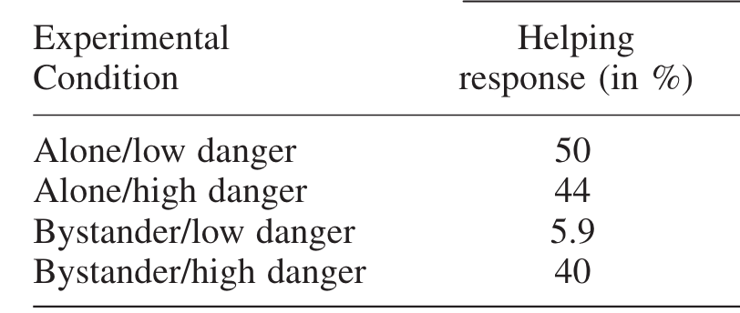
- Does the simulated model produce the phenomenon? How large is the effect size?
- What happens if you change some of the functional parameters? Is the phenomenon still there? Is there a point in parameter space where the phenomenon breaks down?
Step 7: Evaluation of the model
Step 7: Evaluation of the model
The three steps of productive explanation
- Represent the phenomenon as a statistical pattern (empirical anchor)
- Explicate the verbal theory as a formal model (theoretical anchor)
- Evaluate whether the formal model produces the statistical pattern.
“If the formal model and statistical pattern are appropriately anchored, and the formal model produces the statistical pattern, the theory can be said to explain the phenomenon. This does not mean that the explaining theory is true, or that explanatory power is a binary concept: rather, it comes in degrees and depends on the strength of the anchoring and production relations.” (van Dongen, 2025, p. 315)
End
Contact
- @nicebread@scicomm.xyz
- ed.uml.ysp@tdorbneohcs.xilef
- https://www.nicebread.de
- https://github.com/nicebread